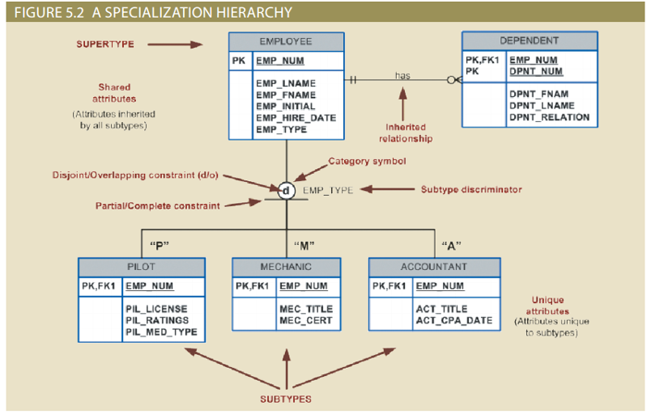
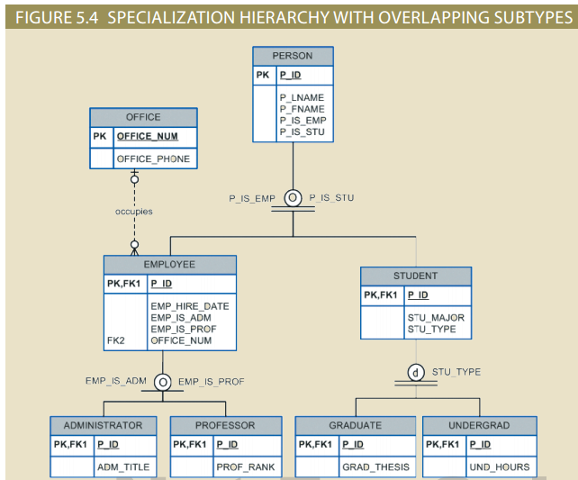
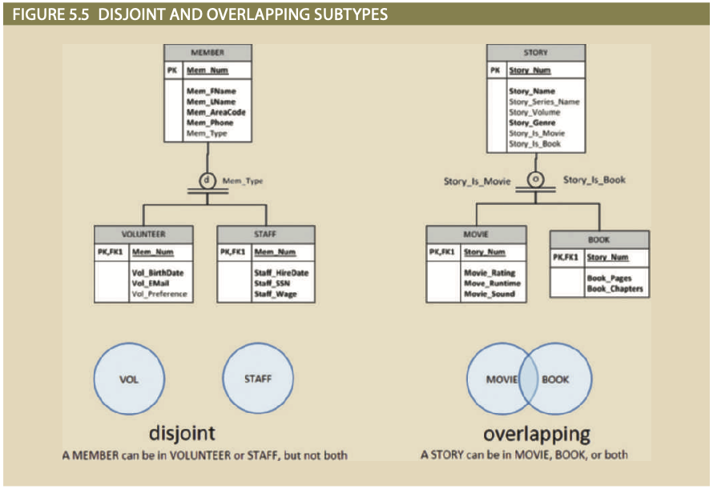
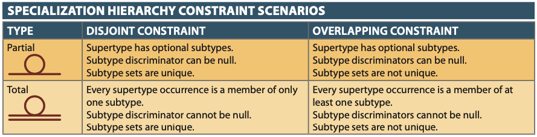
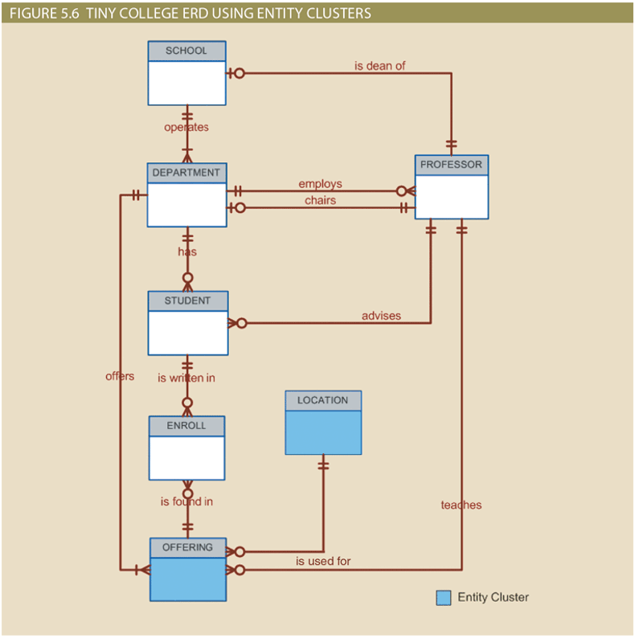
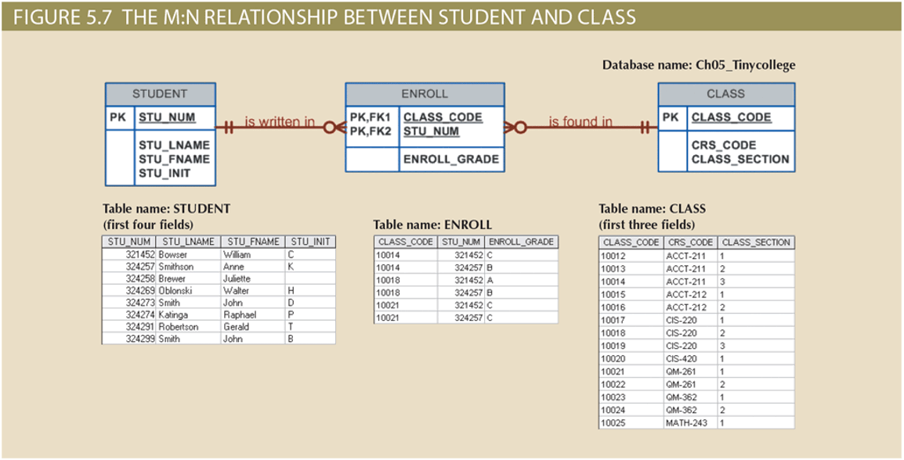
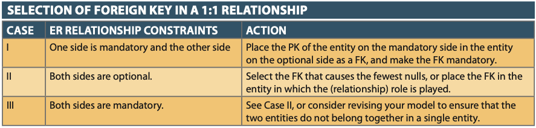
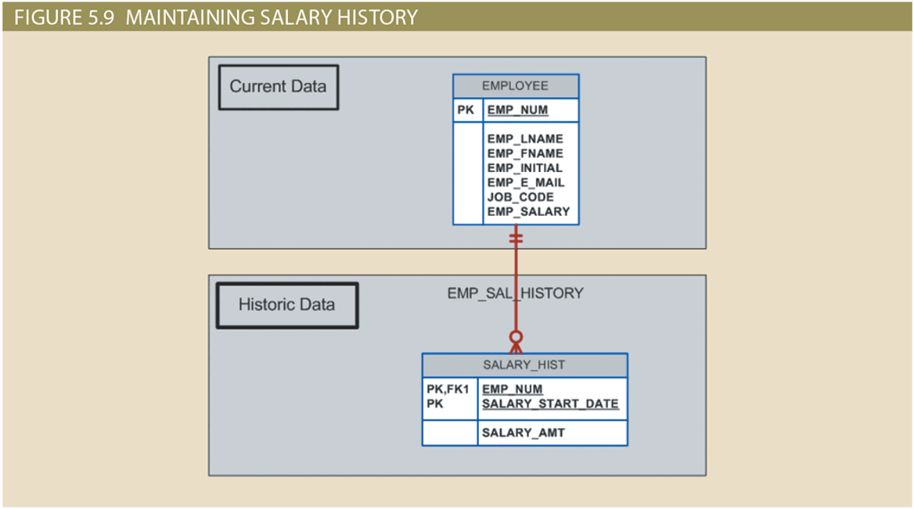
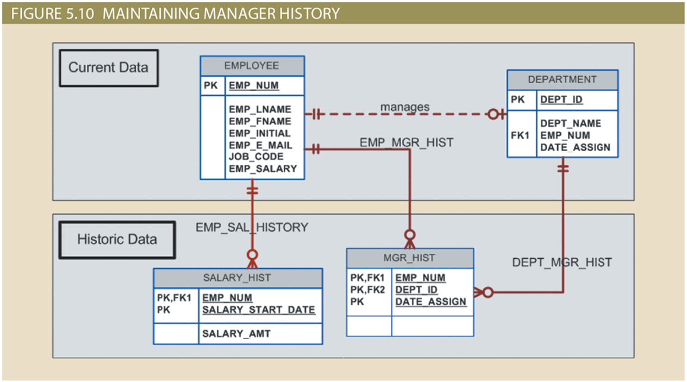
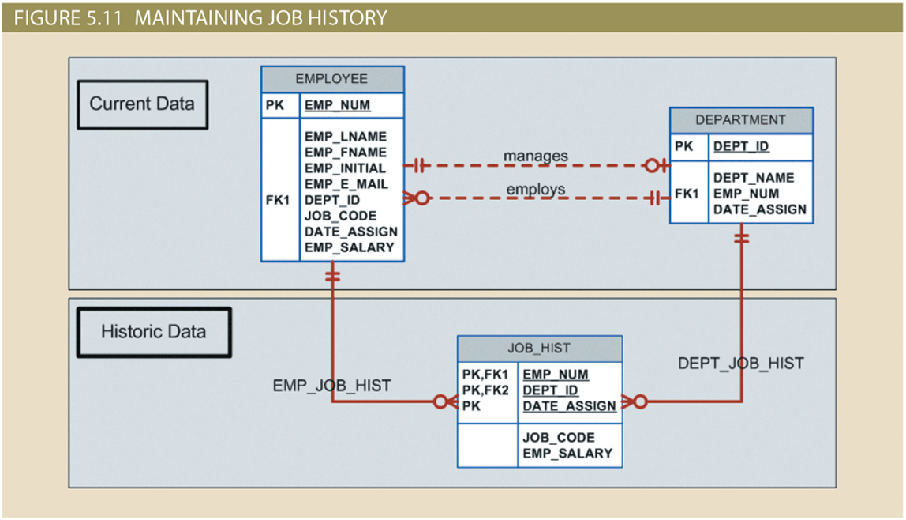

Advanced Data Modeling
Advanced Data Modeling
Note
- Learning Objectives
- Describe the main extended entity relationship (EER) model constructs and how they are represented in ERDs and EERDs
- Use entity clusters to represent multiple entities and relationships in an entity relationship diagram (ERD)
- Describe the characteristics of good primary keys and how to select them
- Apply flexible solutions for special data-modeling cases
Extended Entity Relationship Model (EERM)
- Result of adding more semantic constructs to the original entity relationship (ER) model
- EER diagrams (EERDs) use the EER model
Entity Supertypes and Subtypes
- Entity supertype
- Generic entity type related to one or more entity subtypes
- Contains common characteristics
- Entity subtype
- Contains unique characteristics of each entity subtype
- Criteria to determine usage
- There must be different, identifiable kinds of the entity in the user’s environment
- The different kinds of instances should each have one or more attributes that are unique to that kind of instance
Specialization Hierarchy
- Entity supertypes and subtypes are organized in a specialization hierarchy
- Depicts arrangement of higher-level entity supertypes and lower-level entity subtypes
- Relationships are described in terms of “is-a” relationships
- Subtype exists within the context of a supertype
- Every subtype has one supertype to which it is directly related
- Supertype can have many subtypes
- A specialization hierarchy provides the means to:
- Support attribute inheritance
- Define a special supertype attribute known as the subtype discriminator
- Define disjoint or overlapping constraints and complete or partial constraints

Inheritance
- Enables an entity subtype to inherit attributes and relationships of the supertype
- All entity subtypes inherit their primary key attribute from their supertype
- At the implementation level, supertype and its subtype(s) maintain a 1:1 relationship
- Entity subtypes inherit all relationships in which supertype entity participates
- Lower-level subtypes inherit all attributes and relationships from its upper-level supertypes

Subtype Discriminator
- Attribute in the supertype entity that determines to which entity subtype the supertype occurrence is related
- Default comparison condition is the equality comparison
- In some situations the subtype discriminator is not necessarily based on an equality comparison
Disjoint and Overlapping Constraints
- Disjoint subtypes: contain a unique subset of the supertype entity set
- Known as nonoverlapping subtypes
- Implementation is based on the value of the subtype discriminator attribute in the supertype
- Overlapping subtypes: contain nonunique subsets of the supertype entity set
- Implementation requires the use of one discriminator attribute for each subtype

Completeness Constraint
- Specifies whether each supertype occurrence must also be a member of at least one subtype
- Partial completeness: not every supertype occurrence is a member of a subtype
- Total completeness: every supertype occurrence must be a member of at least one subtypes

Specialization and Generalization (AKA Top-Down and Bottom-Up Development)
- Specialization
- Top-down process
- Identifies lower-level, more specific entity subtypes from a higher-level entity supertype
- Based on grouping unique characteristics and relationships of the subtypes
- Generalization
- Bottom-up process
- Identifies a higher-level, more generic entity supertype from lower-level entity subtypes
- Based on grouping common characteristics and relationships of the subtypes
Entity Clustering
- Virtual entity type used to represent multiple entities and relationships in ERD
- Formed by combining multiple interrelated entities into a single, abstract entity object
- General rule: avoid the display of attributes to eliminate complications that result when the inheritance rules change

Selecting Primary Keys
- Primary keys: single attribute or a combination of attributes
- Uniquely identifies each entity instance
- Guarantees entity integrity
- Works with foreign keys to implement relationships
Natural Keys and Primary Keys
- Natural key or natural identifier: real-world identifier used to uniquely identify real-world objects
- Familiar to end users and forms part of their day-to-day business vocabulary
- Used as the primary key of the entity being modeled
Primary Key Guidelines
- Desirable primary key characteristics
- Non intelligent
- No change over time
- Preferably single-attribute
- Preferably numeric
- Security-compliant
When to Use Composite Primary Keys
- Identifiers of composite entities (i.e. things like Invoice/Invoice Line)
- Each primary key combination is allowed once in M:N relationship
- Identifiers of weak entities (i.e. Dependent because it doesn’t exist on its own)
- Strong identifying relationship with the parent entity
- Represents a real-world object that is existence-dependent on another real-world object
- Represented in the data model as two separate entities in a strong identifying relationship

When to Use Surrogate Primary Keys
- Primary key used to simplify the identification of entity instances
- Useful when there is no natural key
- Helpful if selected candidate key has embedded semantic contents or is too long
- Require ensuring that the candidate key of entity in question performs properly
- Use “unique index” and “not null” constraints
Implementing 1:1 Relationships
- Foreign keys work with primary keys to properly implement relationships in relational model
- Place primary key of the parent entity on the dependent entity as foreign key
- Options for selecting and placing the foreign key
- Place a foreign key in both entities
- Place a foreign key in one of the entities

Maintaining History of Time-Variant Data
- Time-variant data: data whose values change over time and for which a history of the data changes must be retained
- Requires creating a new entity in a 1:M relationship with the original entity
- New entity contains the new value, date of the change, and any other pertinent attribute



Fan Traps
- Design trap: occurs when a relationship is improperly or incompletely identified
- Represented in a way not consistent with the real world
- Fan trap: occurs when one entity is in two 1:M relationships to other entities
- Produces an association among other entities not expressed in the model
Redundant Relationships
- Occur when there are multiple relationship paths between related entities
- Must remain consistent across the model
- Help simplify the design
{kind=link}
{kind=link}
{kind=link}
{kind=link}
{kind=link}
{kind=link}
{kind=link}
{kind=link}
{kind=link}
{kind=link}